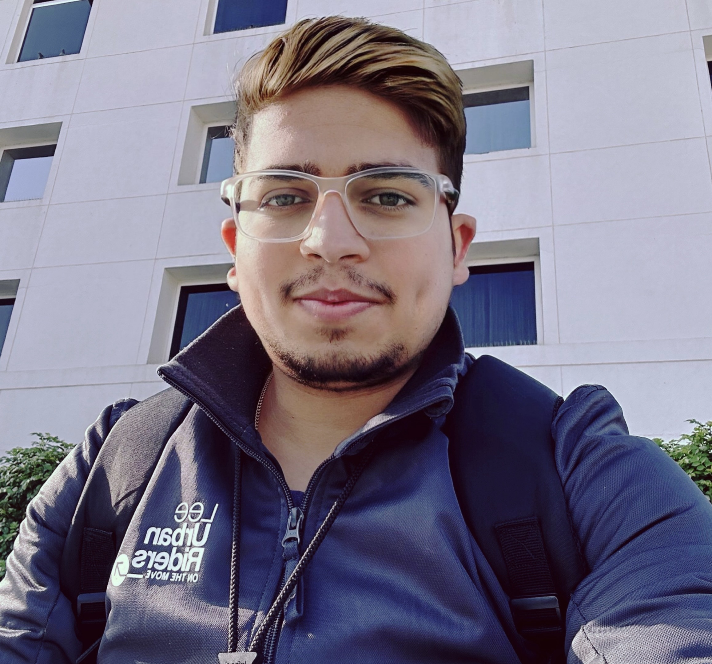

Ankush Kumar

Summary
I am an Cloud/Devops/AI/Public Cloud professional with an overall 11 years of experience in IT industry
Education
- Bachelor of Technology , Metallurgical Engineering - NIT Srinagar(2008-2012)
Work Experience
-
Systems Engineer Trainee - Infosys
July 2013 - Nov 2013
- Undergone 5 months of training in .NET technology from Infosys's Mysore campus.
-
Systems Engineer - Infosys
Dec 2013 - July 2015
- Joined Infosys's Hyderabad campus on Microsoft's NGVL project which has .NET MVC as primary tech stack.
- Worked on Volume licensing project on MVC architecture along with extensive use of SQL , Entity Framework.
-
Senior Systems Engineer - Infosys
Aug 2015 - July 2018
- Worked on Volume licensing project on MVC architecture along with extensive use of SQL , Entity Framework.
-
Technology Architect - Infosys
Aug 2018 - Nov 2021
- Joined Infosys's Chandigarh campus for CITIBANK project.
- Worked in CRM team as UAT support.
- Joined AGS team as ISIS papyrus Developer.
-
Technology Lead - Infosys
Dec 2021 - Present
- Leading a team of 10+ resources as Devops/Papyrus professional.
Skills
- .NET developer: ⭐️⭐️⭐️⭐️⭐️
- Devops Professional: ⭐️⭐️⭐️⭐️⭐️
- Cloud Professional: ⭐️⭐️⭐️⭐️⭐️
- AI Professional: ⭐️⭐️⭐️⭐️⭐️
- Public Cloud Professional: ⭐️⭐️⭐️⭐️⭐️
Awards and Certifications
- Infosys INSTA Award(Dec-2023)
- Infosys RISE Award(Sep-2022, Dec-2022 , Nov-2023)
- Infosys Certified Cloud Professional
- Infosys Certified Devops professional
- Infosys Certified AI professional
- Infosys Certified Public Cloud Professional
Other